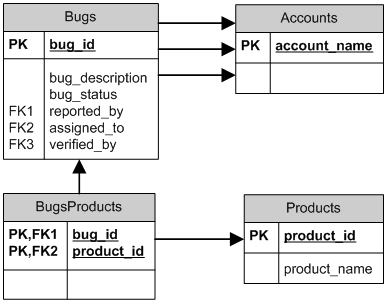

Zend_Db_AdapterZend_Db и его родственные классы предоставляют простой интерфейс к базам данных SQL в Zend Framework. Zend_Db_Adapter является базовым классом, который должен использоваться для подключения приложения PHP к СУРБД. Существуют различные классы адаптеров для наиболее часто используемых СУРБД. Адаптеры Zend_Db создают мост между общим интерфейсом и расширениями PHP от конкретных поставщиков для того, чтобы можно было единовременно писать приложения на PHP и затем переключаться между различными СУРБД с наименьшими усилиями. Интерфейс класса адаптера подобен интерфейсу расширения » PHP Data Objects (PDO). Zend_Db предоставляет классы адаптеров к драйверам PDO для следующих популярных СУРБД:
Кроме этого, Zend_Db предоставляет классы адаптеров, использующие расширения PHP для следующих распространенных СУРБД:
Соединение с БД с использованием адаптераЭтот раздел описывает, как создавать экземпляр адаптера БД. Это соответствует созданию соединения с сервером СУРБД из вашего приложения PHP. Использование конструктора адаптера Zend_DbВы можете создавать экземпляр адаптера с помощью его конструктора. Конструктор адаптера принимает единственный аргумент, который является массивом параметров, использующихся для описания соединения. Example #1 Использование конструктора адаптера
Использование фабрики Zend_Db
Вместо непосредственного использования конструктора
адаптера можно создавать экземпляры адаптера, применяя
статический метод Первым аргументом является строка с базовым именем класса адаптера. Например, строка 'Pdo_Mysql' соответствует классу Zend_Db_Adapter_Pdo_Mysql. Вторым аргументом является тот же массив параметров, который вы должны были бы передать конструктору адаптера. Example #2 Использование метода-фабрики адаптеров
Если вы создали собственный класс, расширяющий
Zend_Db_Adapter_Abstract, но не дали ему имя, начинающееся с
префикса "Zend_Db_Adapter", то можете использовать метод
Example #3 Использование метода-фабрики для пользовательского класса адаптера
Использование Zend_Config с фабрикой Zend_Db
Опционально вы можете заменить оба аргумента метода
Если первым аргументом является объект конфигурации, то
ожидается, что он имеет свойство с именем Example #4 Использование метода-фабрики адаптеров с объектом Zend_Config В примере ниже объект Zend_Config создан из массива. Вы можете также загружать данные из внешнего файла с помощью Zend_Config_Ini или Zend_Config_Xml.
Второй аргумент метода Параметры адаптераСписок ниже описывает общие параметры, которые распознаются классами адаптеров Zend_Db.
Example #5 Передача фабрике опции перевода регистра (case-folding)
Вы можете установить эту опцию посредством константы
Example #6 Передача фабрике опции автоматического заключения в кавычки
Вы можете задавать эту опцию через константу
Example #7 Передача фабрике опций драйвера PDO
Управление отложенными соединениямиСоздание экземпляра класса адаптера не приведет к немедленному соединению с сервером СУРБД. Адаптер сохраняет параметры соединения и производит подключение, когда нужно произвести первый запрос к БД. Это значит, что само по себе создание объекта адаптера производится быстро и занимает мало ресурсов. Вы можете создавать экземпляр адаптера даже в том случае, если не уверены в том, что текущий запрос к вашему приложению требует каких-либо действий с БД.
Если нужно принудительно создать соединение с СУРБД, то
используйте метод Принудительное создание соединения может быть полезным, когда вы хотите отлавливать все исключения, которые бросаются из-за неправильных параметров доступа или других ошибок соединения с сервером СУРБД. Эти исключения не бросаются до тех пор, пока не создается соединение, поэтому можно упростить код приложения, обрабатывая исключения в одном месте вместо того, чтобы делать это каждый раз, когда производится первый запрос к БД. Example #8 Обработка исключений при соединении
Пример базы данныхВ документации к классам Zend_Db мы использовали набор простых таблиц для того, чтобы проиллюстрировать использование классов и их методов. Эти таблицы должны были хранить информацию для отслеживания ошибок в проекте разработки ПО. База данных содержит четыре таблицы:
Следующий псевдокод для определения данных SQL описывает таблицы в этой базе данных. Это таблицы интенсивно используются в unit-тестах для Zend_Db.
Также обратите внимание, что таблица Диаграмма ниже иллюстрирует физическую модель данных для этой базы данных.
 Чтение результатов запросаЭтот раздел описывает методы класса адаптера, с помощью которых вы можете производить запросы SELECT и извлекать их результаты. Извлечение полного набора результатов
Вы можете запустить запрос SELECT и извлечь его результаты за
один шаг, используя метод Первым аргументом этого метода должна быть строка, содержащая оператор SELECT. Также первым аргументом может быть объект класса Zend_Db_Select. Адаптер автоматически преобразует этот объект в строковое представление оператора SELECT.
Вторым аргументом Example #9 Использование fetchAll()
Изменение режима извлечения
По умолчанию
Вы можете задать другой стиль извлечения результатов, используя
метод
Example #10 Использование setFetchMode()
Извлечение результатов выборки в виде ассоциативного массива
Метод Example #11 Использование fetchAssoc()
Извлечение единственного столбца из результатов выборки
Метод Example #12 Использование fetchCol()
Извлечение пар ключ-значение из результатов выборки
Метод Вы должны строить запрос SELECT так, чтобы первый из возвращенных столбцов имел уникальные значения. Если в нем имеются повторяющиеся значения, то записи в ассоциативном массиве будут перезаписываться. Example #13 Использование fetchPairs()
Извлечение единственной строки из результатов выборки
Метод Example #14 Использование fetchRow()
Извлечение единственного скалярного значения из результатов выборки
Метод Example #15 Использование fetchOne()
Изменение данных в БДВы можете использовать класс адаптера для добавления новых данных или изменения существующих в своей базе данных. В данном разделе описываются методы для произведения этих операций. Добавление данных
Вы можете добавлять новые строки в таблицы в своей базе данных,
используя метод Example #16 Добавление в таблицу
Те столбцы, которые не были включены в массив данных, не передаются базе данных. Таким образом, они следуют тем же правилам, что и SQL-оператор INSERT: если столбец имеет предложение DEFAULT, то он принимает это значение в созданной строке, иначе остается в состоянии NULL. По умолчанию значения в вашем массиве данных добавляются с использованием параметров. Это сокращает некоторые риски безопасности. Вам не нужно будет применять к значениям в массиве данных такие действия, как взятие в кавычки или экранирование. Иногда бывает необходимо, чтобы часть значений в массиве данных трактовалась как SQL-выражения, в этом случае они не должны заключаться в кавычки. По умолчанию все данные, переданные в виде строк, трактуются как строковые литералы. Для того, чтобы указать, что данное значение является SQL-выражением (а значит, не должно заключаться в кавычки), передавайте его в массиве данных в виде объекта типа Zend_Db_Expr вместо простой строки. Example #17 Добавление выражений в таблицу
Получение сгенерированного значения
Некоторые СУРБД поддерживают автоинкремент первичных ключей.
Таблица, описанная определенным образом, автоматически
генерирует значение первичного ключа во время добавления новой
строки.
Возвращаемое методом
Если ваша таблица определена с автоинкрементным первичным
ключом, то вы можете вызывать метод Example #18 Использование lastInsertId() для автоинкрементного ключа
Некоторые СУРБД поддерживают объекты последовательностей
(sequence object), которые генерируют уникальные значения для
использования в качестве значений первичных ключей. Для
поддержки последовательностей Example #19 Использование lastInsertId() для последовательности
Если имя вашего объекта последовательности не следует этому
соглашению по именованию, то используйте метод
Example #20 Использование lastSequenceId()
Для тех СУРБД, которые не поддерживают последовательности, включая MySQL, Microsoft SQL Server и SQLite, аргументы метода lastInsertId() игнорируются, и возвращается самое последнее значение, сгенерированное для любой таблицы через оператор INSERT в течение данного соединения. Для этих типов СУРБД метод lastSequenceId() всегда будет возвращать NULL.
Обновление данных
Вы можете обновлять строки в таблице БД, используя метод
Значения в массиве данных интерпретируются как строковые константы. Информацию об использовании выражений SQL в массиве данных см. в разделе Добавление данных. Третий аргумент является строкой, содержащей выражение SQL, которое используется в качестве условия, при выполнении которого строка должна изменяться. Значения и идентификаторы в этом аргументе не заключаются в кавычки и не экранируются. Вы ответственны за то, чтобы все динамическое содержимое было безопасным образом включено в эту строку. Информацию о методах, которые помогут вам в этом, см. в разделе Заключение в кавычки значений и идентификаторов. Возвращаемое значение является числом строк, затронутых в операции обновления. Example #21 Обновление строк
Если вы опустите третий аргумент, то все строки в таблице БД будут обновлены со значениями, указанными в массиве данных.
Если вы передадите массив строк в качестве третьего аргумента,
то эти строки будут объединены как термы выражения, разделенные
операторами Example #22 Обновление строк с использованием массива выражений
Удаление данных
Вы можете удалять строки из таблицы БД, используя метод
Второй аргумент является строкой, содержащей выражение SQL, который используется в качестве условия, при выполнении которого строка удаляется. Значения и идентификаторы в этом аргументе не заключаются в кавычки и не экранируются. Вы ответственны за то, чтобы весь динамический контент был безопасным образом включен в эту строку. Информацию о методах, которые помогут вам в этом, см. в разделе Заключение в кавычки значений и идентификаторов. Возвращаемое значение является числом строк, задействованных в операции удаления. Example #23 Удаление строк
Если вы опустите второй аргумент, то в результате все строки в таблице БД будут удалены.
Если вы передадите массив строк в качестве второго аргумента, то
эти строки будут объединены как термы выражения, разделенные
операторами Заключение в кавычки значений и идентификаторовПри построении запросов SQL часто требуется включить значения переменных PHP в выражения SQL. Это несет в себе дополнительный риск, потому что если значение в строке PHP содержит определенные символы, такие, как символы кавычек, то в результате может получиться недопустимый код SQL. Например, обратите внимание на несоответствие кавычек в следующем запросе:
Еще серьезнее риск того, что такие ошибки в коде могут быть целенаправленно использованы тем, кто пытается получить управление вашим веб-приложением. Если он может указать значение переменной PHP, используя параметры HTTP или другой механизм, то может заставить ваши SQL-запросы выполнять действия, для которых они не предназначены - например, возвращение данных, на чтение которых лицо не имеет прав. Это серьезное и широко распространенное нарушение безопасности приложения, известное под названием "SQL-инъекции" (см. » http://ru.wikipedia.org/wiki/Инъекция_SQL). Класс адаптера Zend_Db предоставляет удобные функции для того, чтобы уменьшить уязвимость приложения к SQL-инъекциям. Решение состоит в том, чтобы экранировать специальные символы, такие, как кавычки в значениях PHP, до того, как они будут включены в строки запросов SQL. Это защищает как от случайных, так и от целенаправленных манипуляций строками SQL через переменные PHP, содержащие специальные символы. Использование |
| Ключ | Тип | Описание |
|---|---|---|
| SCHEMA_NAME | (string) | Имя схемы БД, в которой находится эта таблица. |
| TABLE_NAME | (string) | Имя таблицы, которой принадлежит данный столбец. |
| COLUMN_NAME | (string) | Имя столбца |
| COLUMN_POSITION | (integer) | Порядковый номер столбца в таблице. |
| DATA_TYPE | (string) | Имя типа данных столбца, используемое в данной СУРБД |
| DEFAULT | (string) | Значение по умолчанию, если есть. |
| NULLABLE | (boolean) | TRUE, если столбец допускает значение NULL, иначе FALSE. |
| LENGTH | (integer) | Длина или значение столбца, сообщаемое СУРБД. |
| SCALE | (integer) | Масштаб для типа данных NUMERIC или DECIMAL. |
| PRECISION | (integer) | Точность для типа данных NUMERIC или DECIMAL. |
| UNSIGNED | (boolean) | TRUE, если целочисленный тип объявлен как UNSIGNED (беззнаковое число). |
| PRIMARY | (boolean) | TRUE, если столбец является частью первичного ключа этой таблицы. |
| PRIMARY_POSITION | (integer) | Порядковый номер (начинается с 1) данного столбца в первичном ключе. |
| IDENTITY | (boolean) | TRUE, если данный столбец использует автоматически генерируемые значения. |
Если таблица, соответствующая заданным имени таблицы и имени схемы
(опционально), не существует, то describeTable()
возвращает пустой массив.
Note: Как поле метаданных IDENTITY соотносится с типом СУРБД
Поле метаданных IDENTITY было выбрано в качестве "идиоматического" термина для представления связи с суррогатными ключами. Это поле обычно знакомо под следующими именами:
IDENTITY- DB2, MSSQL
AUTO_INCREMENT- MySQL
SERIAL- PostgreSQL
SEQUENCE- Oracle
Обычно нет необходимости в том, чтобы закрывать соединение с БД. PHP автоматически очищает все ресурсы в конце запроса. Расширения PHP для баз данных спроектированы таким образом, чтобы они закрывали соединение, когда удаляется ссылка на объект ресурса.
Тем не менее, если у вас есть скрипт PHP длительного времени
выполнения, который инициирует множество соединений с БД, то может
потребоваться закрывать соединения, чтобы избежать снижения
производительности сервера СУРБД. Вы можете использовать метод
адаптера closeConnection() для явного закрытия лежащего
в основе соединения с БД.
Example #30 Закрытие соединения с БД
Note: Поддерживает ли Zend_Db постоянные соединения?
Использование постоянных соединений не поддерживается или рекомендуется в Zend_Db.
Использование постоянных соединений может привести к избытку неиспользуемых соединений на сервере СУРБД, что приносит больше проблем, чем дает выигрыша в производительности, достигаемого путем уменьшения накладных расходов на установку соединений.
Соединения с БД имеют свое состояние, т.е. некоторые объекты на сервере СУРБД существуют в области видимости сессии. Примером являются блокировки, пользовательские переменные, временные таблицы и информация о последних выполненных запросах, такая, как количество затронутых строк и последнее сгенерированное значение. Если вы используете постоянные соединения, то ваше приложение может получать неверные или привилегированные данные, созданные в предыдущем PHP-запросе.
Может потребоваться получить прямой доступ к объекту соединения в том виде, в котором он предоставляется расширением PHP для баз данных. Некоторые из этих расширений могут предоставлять функционал, который не поддерживается методами Zend_Db_Adapter_Abstract.
Например, все операторы SQL, запускаемые через Zend_Db, подготавливаются перед выполнением. Однако некоторый функционал баз данных несовместим с подготовленными операторами. Операторы DDL, такие, как CREATE и ALTER, не могут подготавливаться в MySQL. Также операторы SQL не дают выигрыша от » кэширования запросов MySQL в версиях MySQL до 5.1.17.
Большинство расширений PHP для баз данных предоставляет метод для
выполнения операторов SQL без их подготовки. Например, в PDO таким
методом является exec(). Вы можете обратиться напрямую
к объекту соединения в расширении PHP, используя getConnection().
Example #31 Запуск неподготовленного оператора в адаптере PDO
Так же вы можете получить доступ к другим методам или свойствам, специфическим для данного расширения. Тем не менее, следует учитывать, что, делая это, вы можете ограничить ваше приложение интерфейсом, предоставляемым расширением для определенной СУРБД.
В будущих версиях Zend_Db будет возможность добавить точки входа методов для функционала, который является общим для поддерживаемых расширений PHP. Это не нарушит обратную совместимость.
В данный разделе описываются различия между классами адаптеров, о которых следует знать.
Для установки этого адаптера через метод factory() используйте строку 'Db2'.
Этот адаптер использует PHP-расширение ibm_db2.
IBM DB2 поддерживает как последовательности, так и
автоинкрементные ключи. Поэтому аргументы для
lastInsertId() являются опциональными. Если
вы не передадите аргументы, то адаптер вернет последнее
значение, сгенерированное для автоинкрементного ключа.
Если вы передадите аргументы, то адаптер вернет
последнее значение, сгенерированное последовательностью,
имя которой удовлетворяет соглашению
'таблица_имя_seq'.
Для установки этого адаптера через метод factory() используйте строку 'Mysqli'.
Этот адаптер использует PHP-расширение mysqli.
MySQL не поддерживает последовательности, поэтому
lastInsertId() игнорирует переданные
аргументы и всегда возвращает последнее значение,
сгенерированное для автоинкрементного ключа. Метод
lastSequenceId() возвращает
NULL.
Для установки этого адаптера через метод factory() используйте строку 'Oracle'.
Этот адаптер использует PHP-расширение oci8.
Oracle не поддерживает автоинкрементные ключи, поэтому
вы должны указывать имя последовательности для
lastInsertId() или
lastSequenceId().
Расширение Oracle не поддерживает позиционные параметры. Вы должны использовать именованные параметры.
На данный момент опция
Zend_Db::CASE_FOLDING не поддерживается
адаптером Oracle. Для того, чтобы применять эту опцию с
Oracle, вам нужно использовать адаптер PDO OCI.
Для установки этого адаптера через метод factory() используйте строку 'Pdo_Ibm'.
Этот адаптер использует PHP-расширения pdo и pdo_ibm.
Вы должны использовать расширение PDO_IBM версии не ниже 1.2.2. Если вы используете более раннюю версию этого расширения, то должны обновить расширение PDO_IBM из PECL.
Для установки этого адаптера через метод factory() используйте строку 'Pdo_Mssql'.
Этот адаптер использует PHP-расширения pdo и pdo_mssql.
Microsoft SQL Server не поддерживает последовательности,
поэтому lastInsertId() игнорирует
переданные аргументы и всегда возвращает последнее
значение, сгенерированное для автоинкрементного ключа.
Метод lastSequenceId() возвращает
NULL.
Zend_Db_Adapter_Pdo_Mssql устанавливает
QUOTED_IDENTIFIER ON сразу после соединения
с сервером баз данных. Это заставляет драйвер
использовать стандартные символы-ограничители
идентификаторов (") вместо квадратных
скобок, которые SQL Server использует в качестве
ограничителей идентификаторов.
Вы можете указывать pdoType в качестве
ключа в массиве опций. Возможными значениями могут быть
"mssql" (по умолчанию),
"dblib", "freetds" или "sybase". Эта опция влияет на
префикс DSN, который используется адаптером, когда
строится строка DSN. "Freetds" и "sybase" подразумевают
префикс "sybase:", который используется для набора
библиотек » FreeTDS. Более
подробную информацию о префиксах, используемых в этих
драйверах, читайте на
»
http://www.php.net/manual/en/ref.pdo-dblib.connection.php.
Для установки этого адаптера через метод factory() используйте строку 'Pdo_Mysql'.
Этот адаптер использует PHP-расширения pdo и pdo_mysql.
MySQL не поддерживает последовательности,
поэтому lastInsertId() игнорирует
переданные аргументы и всегда возвращает последнее
значение, сгенерированное для автоинкрементного ключа.
Метод lastSequenceId() возвращает
NULL.
Для установки этого адаптера через метод factory() используйте строку 'Pdo_Oci'.
Этот адаптер использует PHP-расширения pdo и pdo_oci.
Oracle не поддерживает автоинкрементные ключи, поэтому
вы должны указывать имя последовательности для
lastInsertId() или
lastSequenceId().
Для установки этого адаптера через метод factory() используйте строку 'Pdo_Pgsql'.
Этот адаптер использует PHP-расширения pdo и pdo_pgsql.
PostgreSQL поддерживает как последовательности, так и
автоинкрементные ключи. Поэтому аргументы для
lastInsertId() являются опциональными. Если
вы не передадите аргументы, то адаптер вернет последнее
значение, сгенерированное для автоинкрементного ключа.
Если вы передадите аргументы, то адаптер вернет
последнее значение, сгенерированное последовательностью,
имя которой удовлетворяет соглашению
'таблица_имя_seq'.
Для установки этого адаптера через метод factory() используйте строку 'Pdo_Sqlite'.
Этот адаптер использует PHP-расширения pdo и pdo_sqlite.
SQLite не поддерживает последовательности,
поэтому lastInsertId() игнорирует
переданные аргументы и всегда возвращает последнее
значение, сгенерированное для автоинкрементного ключа.
Метод lastSequenceId() возвращает
NULL.
Для того, чтобы соединится с базой данных SQLite2,
указывайте 'sqlite2'=>true в массиве
параметров при создании экземпляра адаптера Pdo_Sqlite.
Для соединения с базой данных SQLite в памяти указывайте
'dbname'=>':memory:' в массиве параметров
при создании экземпляра адаптера Pdo_Sqlite.
Старые версии драйвера SQLite для PHP могут не поддерживать команды PRAGMA, необходимые для обеспечения использования коротких имен столбцов в результатах. Если имеются проблемы с тем, что результаты возвращаются с ключами в виде "tablename.columnname", когда производится запрос с объединением таблиц, то следует обновить PHP до текущей версии.
Этот адаптер использует PHP-расширение php_interbase.
Firebird/interbase не поддерживает автоинкрементные
ключи, поэтому вы должны указывать имя
последовательности для
lastInsertId() или
lastSequenceId().
На данный момент опция
Zend_Db::CASE_FOLDING не поддерживается
адаптером Firebird/interbase. Не заключенные в кавычки
идентификаторы автоматически возвращаются в верхнем
регистре..
| Zend_Db |